07/07/2025 — Bệnh nhân 75 tuổi đau ngực cấp: 6 lý do sai lầm để không thông tim
Bản dịch tiếng Việt của bài "75 year old with acute chest pain: 6 bad reasons not to cath." – Dr. Smith’s ECG Blog. Giữ nguyên toàn bộ 12 hình ảnh của bản gốc.

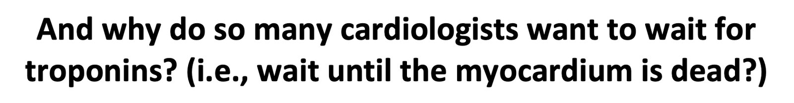
Tác giả: Jesse McLaren, Smith biên tập
Một bệnh nhân 75 tuổi không có tiền sử bệnh tim đến khoa cấp cứu (ED) vì đau ngực cấp 3 giờ, lan lên hàm và hai vai. Câu hỏi “thông tim hay không thông tim” đã được trả lời bằng 5 lý do thường gặp:
- không có tiêu chuẩn STEMI trên các điện tâm đồ liên tiếp
- không có thay đổi soi gương (reciprocal)
- troponin đầu tiên bình thường
- troponin thứ hai không cao lắm
- không tiến triển thành ST chênh lên
- cơn đau đỡ hơn khi dùng nitro
Hãy đi qua ca bệnh và ở mỗi bước tự hỏi: thông tim hay không thông tim?
Đây là điện tâm đồ lúc phân loại (triage) và điện tâm đồ ghi lại 30 phút sau:

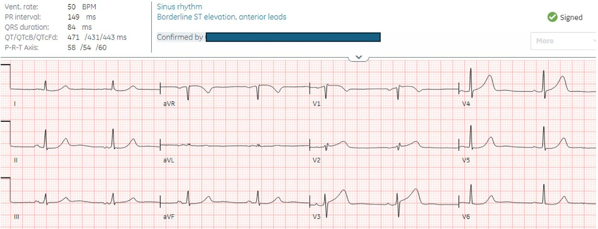

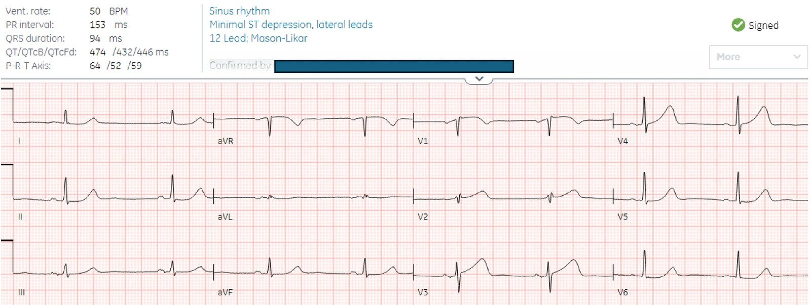
Bạn nghĩ gì?
Có nhịp chậm xoang, dẫn truyền bình thường, trục bình thường, tăng tiến sóng R và điện thế bình thường. ST chênh lên tối thiểu ở các chuyển đạo trước là bình thường. Mặt khác, sóng T ở V2-4 có đáy rộng, đầy đặn và lớn so với QRS của chúng (và so với các chuyển đạo khác, nơi sóng T có diện tích dưới đường cong nhỏ). Trên điện tâm đồ ghi lại, đoạn ST đang thẳng đuỗn ra ở V3, và có ST chênh xuống ở V6 (được ghi trong kết quả đọc cuối cùng là ‘ST chênh xuống tối thiểu, các chuyển đạo bên’).
1. Không có tiêu chuẩn STEMI? Chúng ta biết từ tổng quan hệ thống và phân tích gộp của de Alencar và cs. rằng tiêu chuẩn này chỉ có độ nhạy 43% đối với nhồi máu cơ tim do tắc (Occlusion MI). Đồng thuận chuyên gia ACC năm 2022 đã thêm sóng T tối cấp vào danh sách các “tương đương STEMI”.
2. Không có thay đổi soi gương? Câu thần chú ghi nhớ “PAILS” dạy rằng ST chênh lên ở thành trước gây ra ST chênh xuống soi gương ở thành dưới, nhưng các chuyển đạo này nằm trên những mặt phẳng khác nhau và không soi gương với nhau. Trong mặt phẳng ngang của các chuyển đạo trước tim, chuyển đạo trước và chuyển đạo sau soi gương với nhau, còn V1 soi gương với V6. Trong mặt phẳng trán của các chuyển đạo chi, chuyển đạo dưới và chuyển đạo bên cao soi gương với nhau. Tắc LAD chỉ gây ST chênh xuống ở thành dưới nếu đó là hình soi gương của ST chênh lên ở chuyển đạo bên cao (do tắc ở đoạn gần trước nhánh chéo thứ nhất), điều không có ở đây. Mặt khác, có ST chênh xuống ở V6, soi gương với V1 (xoáy trước tim (precordial swirl)), cho thấy tắc ở đoạn gần trước nhánh vách. Hơn nữa, có một chút xíu ST chênh xuống soi gương ở II và aVF, rõ ràng là bất thường
Vì vậy, dựa trên tiêu chuẩn STEMI và “không có thay đổi soi gương”, phòng thông tim (cath lab) đã không được kích hoạt.
Xét nghiệm troponin được gửi đi. Đây có phải là quyết định đúng?
Tôi gửi điện tâm đồ này cho bác sĩ Smith mà không kèm bất kỳ thông tin nào, và ông trả lời “Tôi phải nói rằng đây là tắc LAD.” Nghĩa là: vào phòng thông tim ngay.
Ngoài ra, dựa trên kết quả đọc bằng AI được huấn luyện bởi chuyên gia, bệnh nhân có triệu chứng điển hình của hội chứng vành cấp (ACS) này có điện tâm đồ chẩn đoán OMI. Đây là kết quả đọc của Queen of Hearts với điện tâm đồ đầu tiên, làm nổi bật sóng T tối cấp và xoáy trước tim kín đáo:

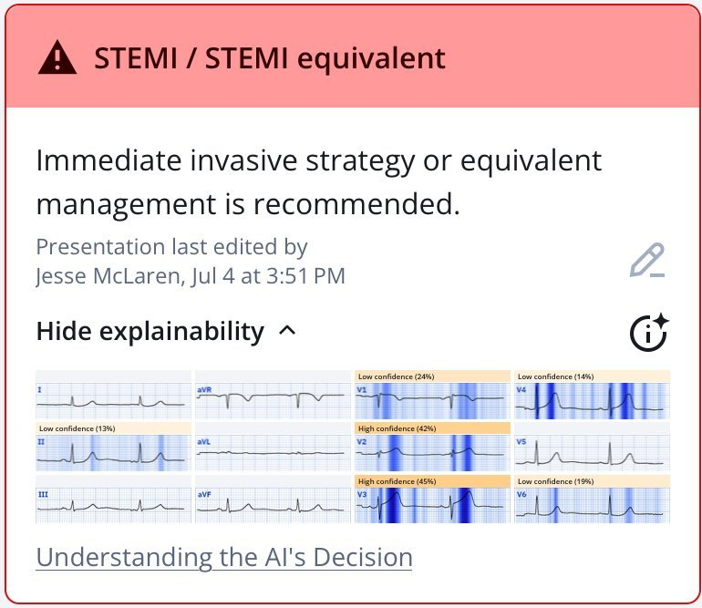
Ứng dụng PMcardio for Individuals 3.0 mới nay đã có mô hình Queen of Hearts mới nhất và khả năng giải thích của AI (bản đồ nhiệt màu xanh)! Tải ngay cho iOS hoặc Android. https://www.powerfulmedical.com/pmcardio-individuals/ (Bác sĩ Smith và Meyers đã huấn luyện mô hình AI và là cổ đông của Powerful Medical.)
Ca bệnh tiếp diễn
Troponin đầu tiên trả về 8 ng/L (bình thường <16 ở nữ và <26 ở nam), có vẻ như khẳng định quyết định không kích hoạt phòng thông tim. Bạn nghĩ gì?
3. Troponin đầu tiên bình thường. Troponin là chiếc gương chiếu hậu, chỉ cho thấy tổn thương trong quá khứ, chứ không cho thấy tổn thương vừa mới xảy ra hay đang diễn ra. Trong bối cảnh triệu chứng cấp, troponin đầu tiên không đáng tin cậy để phát hiện nhồi máu cơ tim: nó <99th percentile (bách phân vị thứ 99) ở 14% bệnh nhân STEMI, bao gồm gần một phần tư số bệnh nhân đến viện trong vòng hai giờ. Thực tế, ngay cả nồng độ hs-cTnI cao tới 50 ng/L (với giới hạn trên tham chiếu (URL) là 34 ng/L) cũng chỉ có PPV 25%, vì những mức dương tính nhưng thấp như vậy gặp trong nhiều bệnh lý không phải nhồi máu cơ tim cấp (Non-AMI). Và troponin không cho biết tình trạng hiện tại của động mạch (thông hay tắc), nhưng chúng ta có thể biết tình trạng hiện tại qua triệu chứng (đau ngực đang tiếp diễn) và điện tâm đồ (sóng T tối cấp). Hơn nữa, trong khi bạn chờ troponin, cơ tim đang chết dần. Do đó, bạn nên dùng điện tâm đồ, chứ không phải troponin, để quyết định thông tim cấp cứu.
4. Troponin lần 2 chưa đủ cao. Cơn đau ngực tiếp diễn và troponin xét nghiệm lại 2 giờ sau tăng lên 46 ng/L. Đây là mức chênh (delta) 38 ng/L, và có độ đặc hiệu 97% đối với nhồi máu cơ tim cấp (dù là típ 1 hay típ 2). Bệnh nhân được cho dùng nitro và ghi lại điện tâm đồ, bản ghi này cũng “STEMI âm tính” nên bệnh nhân được chuyển cho tim mạch như một ca “NSTEMI”.

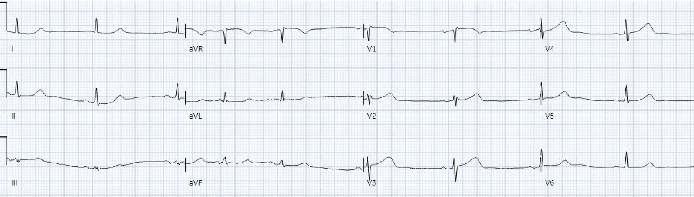
Bác sĩ tim mạch khám bệnh nhân 5 giờ sau khi đến viện, và ghi nhận không chính xác rằng không có thay đổi điện tâm đồ động, và rằng nitro đã làm giảm đau từ 7/10 xuống 3/10, nên bệnh nhân được nhập viện như “NSTEMI”. Bạn nghĩ gì?
5. Không tiến triển thành ST chênh lên. Vẫn không có tiêu chuẩn STEMI, và sóng T tối cấp chưa tiến triển thành STEMI. Nhưng trái với quan niệm phổ biến, sóng T tối cấp không phải lúc nào cũng tiến triển thành ST chênh lên (STE). Mặt khác, sóng T tối cấp đã xẹp bớt một phần và ST chênh xuống ở V6 đã hết – nên đã có thay đổi động. Smith và Meyers có một bài báo đang chờ xuất bản cho thấy, trong 53 ca LAD TIMI-0, chỉ 33 ca đạt tiêu chuẩn STEMI và KHÔNG ca nào trong 20 ca không có STE xuất hiện tiêu chuẩn STEMI trên các điện tâm đồ sau đó.
Đây là so sánh các chuyển đạo trước tim của 3 điện tâm đồ đầu tiên, cho thấy sóng T tối cấp phồng lên rồi xẹp bớt một phần, và STD thoáng qua ở V6:

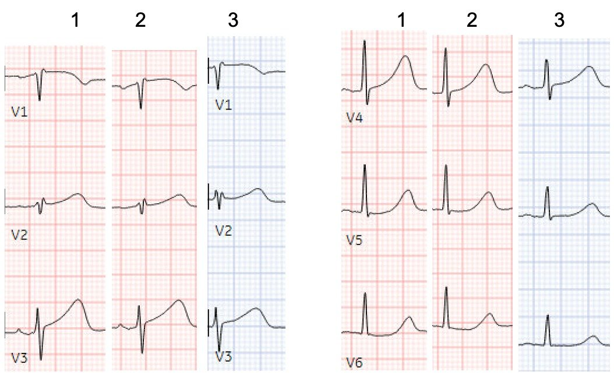
Ngay cả với sự cải thiện này, và không có bản ghi trước để so sánh, Queen of Hearts vẫn nhận ra sóng T tối cấp:

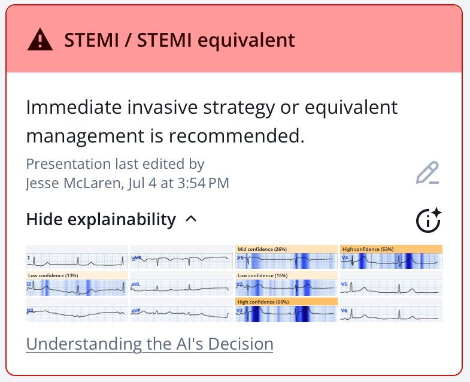
6. Cơn đau đã đỡ hơn (dù vẫn còn)!! Ngay cả khi không có bất kỳ điện tâm đồ nào trước đó, việc ghi nhận đau ngực do thiếu máu cục bộ giảm từ 7/10 xuống 3/10 cũng chính là xác nhận bệnh nhân đang đau ngực tiếp diễn, kháng trị (cùng với troponin đang tăng) – đây là chỉ định tái tưới máu ngay lập tức theo các hướng dẫn về NSTEMI – nhưng hiếm khi được tuân thủ.
Thay vào đó, bệnh nhân được xử trí như phần lớn các ca NSTEMI: “theo dõi xu hướng” troponin và lên kế hoạch chụp mạch vành không khẩn cấp. Troponin tăng lên 300 rồi 1500, và bệnh nhân được dán miếng nitro. Troponin tiếp tục tăng lên 1700 rồi 2500 ng/L, và ghi chép điều dưỡng cho thấy bệnh nhân vẫn tiếp tục đau ngực nhẹ.
Không có thêm điện tâm đồ nào cho tới 12 giờ sau khi đến viện, khi bệnh nhân ngừng tim:

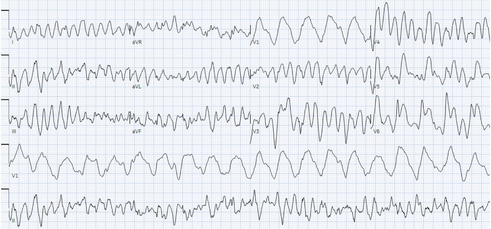
VT đa dạng, được xử trí bằng hồi sinh tim phổi (CPR) và khử rung:

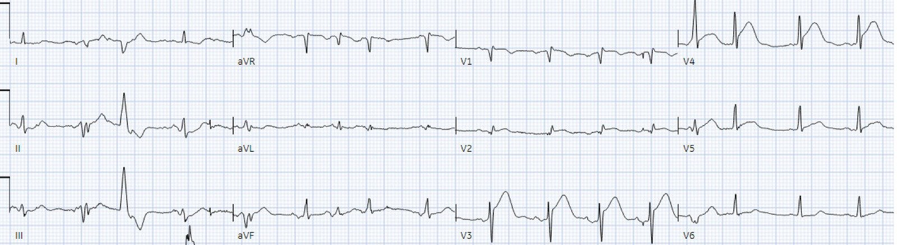
Sóng T tối cấp vẫn còn và ST chênh lên mới ở V3-4.
Ngừng tim lại là điều may mắn! Nếu bệnh nhân không ngừng tim, họ sẽ tiếp tục âm thầm mất cơ tim, và việc tái tưới máu sẽ còn bị trì hoãn hơn nữa. Dù vậy, đến giờ thứ 12, gần như toàn bộ lợi ích của tái tưới máu đã mất. Nhưng vì điện tâm đồ sau ngừng tim cuối cùng đã đạt tiêu chuẩn STEMI, phòng thông tim được kích hoạt và phát hiện tắc 100% LAD đoạn gần.
Nếu dùng Queen of Hearts, bệnh nhân này đã có thể được kích hoạt phòng thông tim ngay lúc phân loại, thậm chí trước khi troponin đầu tiên trả về bình thường. Thay vào đó, thời gian từ cửa đến thông tim là 13 giờ, troponin đỉnh là 24.000 ng/L, và phân suất tống máu (EF) là 40% với giảm động nặng thành trước. Điện tâm đồ sau thông tim cho thấy sóng T đảo ngược do tái tưới máu ở thành trước:

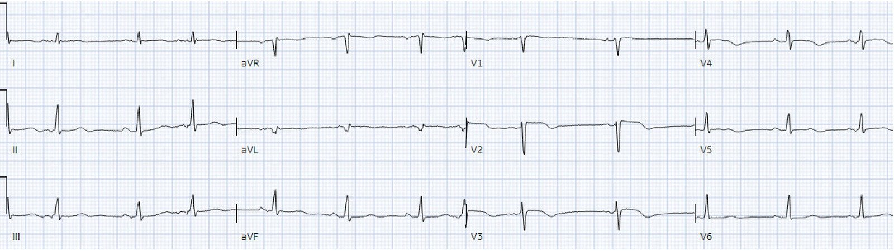
Tóm lại, để trả lời câu hỏi “thông tim hay không thông tim”:
- Không có tiêu chuẩn STEMI trên các điện tâm đồ liên tiếp: Nhưng STE có độ nhạy kém đối với OMI, và đã có sóng T tối cấp
- Không có thay đổi soi gương: Không phải mọi ca tắc LAD đều có STD ở thành dưới, và đã có xoáy trước tim
- Troponin đầu tiên bình thường: Troponin là chiếc gương chiếu hậu, chỉ cho thấy tổn thương trong quá khứ, nên thường bình thường trong OMI
- Troponin thứ hai chưa đủ cao: troponin bị “mắc kẹt” phía sau động mạch bị tắc và thường vẫn thấp cho tới khi được giải phóng nhờ tái tưới máu.
- Không tiến triển thành ST chênh lên? Điều này thường gặp ở mọi OMI, kể cả OMI do LAD. Sóng T tối cấp thường không tiến triển thành STE. Và, ngoài ra, đã có thay đổi động.
- Cơn đau đỡ hơn khi dùng nitro: Như vậy là chưa đủ. Cơn đau không hết. Bất kỳ nhồi máu cơ tim nào (OMI hay NOMI) có thiếu máu cục bộ dai dẳng trên điện tâm đồ và/hoặc đau dai dẳng đều là chỉ định vào phòng thông tim cấp cứu. (Ca OMI cấp duy nhất không thuộc chỉ định này là ca đã tái tưới máu, nhưng ngay cả như vậy cũng có nguy cơ). Hơn nữa, nhồi máu tiếp diễn cũng làm cơn đau giảm đi, vì còn ít cơ tim sống để gây đau!!

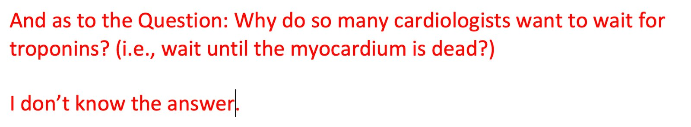
=====================
======================================
BÌNH LUẬN CỦA TÔI, bởi KEN GRAUER, MD (7/7/2025):
Bài viết đầy sức thuyết phục hôm nay của bác sĩ McLaren tổng hợp nhiều lý do MẤU CHỐT khiến quá nhiều bác sĩ lâm sàng tiếp tục bỏ lỡ cơ hội can thiệp tối ưu ở những bệnh nhân đến viện vì CP (đau ngực) mới xuất hiện . Hậu quả đáng tiếc là mất quá nhiều cơ tim.
- Cần phải cải thiện …
Để cho rõ, trong Hình 1 — tôi đã tái hiện điện tâm đồ ban đầu trong ca hôm nay, đặt cạnh điện tâm đồ ghi lại lần 2 được thực hiện 2 giờ sau đó.
- Câu hỏi: (Những) chuyển đạo nào trong điện tâm đồ ban đầu hôm nay mà chúng ta biết chắc không thể nào bình thường ở một bệnh nhân CP mới xuất hiện?
====================
Hình 1: Tôi đặt điện tâm đồ ban đầu hôm nay cạnh điện tâm đồ ghi lại lần 2 được thực hiện ~2 giờ sau bản ghi ban đầu.

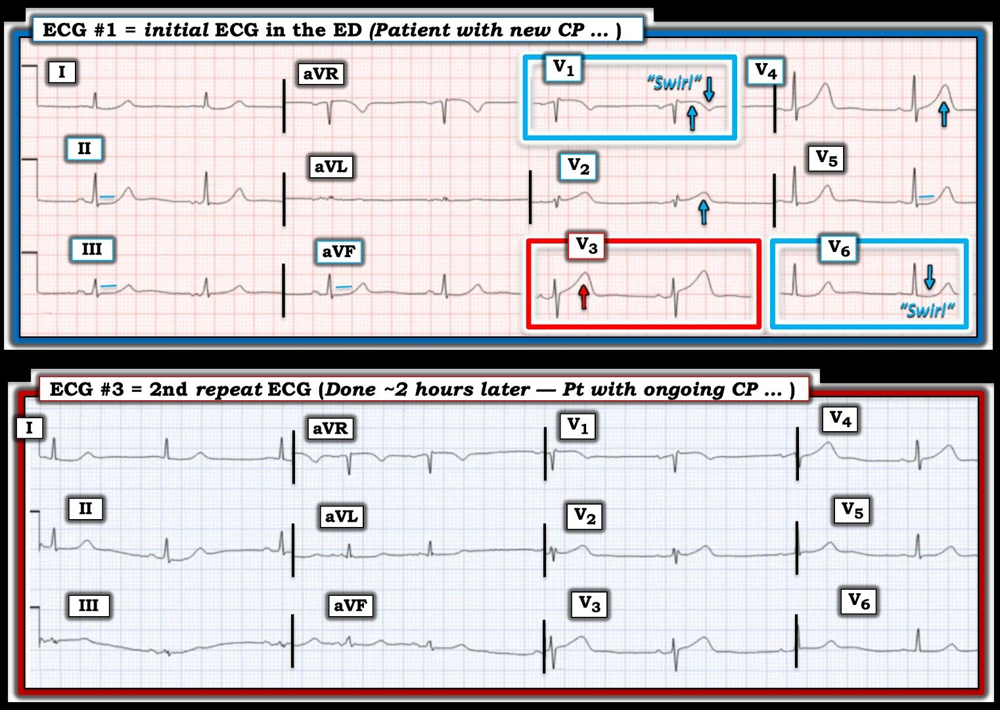
================================
Điện tâm đồ #1: Những chuyển đạo nào không thể nào bình thường?
Dù bạn có dùng ứng dụng QOH (Queen Of Hearts) để hỗ trợ nhận biết các thay đổi điện tâm đồ cấp hay đơn giản là học cách nhận ra các hình ảnh — thì ở một bệnh nhân CP mới xuất hiện, hoàn toàn không có cách nào để sóng ST-T ở chuyển đạo V3 của điện tâm đồ ban đầu có thể bình thường.
- Không chỉ sóng T ở chuyển đạo V3 cao hơn sóng R ở chuyển đạo này — mà sóng T này còn rõ ràng “đầy đặn hơn” mức đáng có (“béo hơn” ở đỉnh và rộng hơn ở đáy so với những gì người ta chờ đợi với kích thước QRS khiêm tốn ở chuyển đạo này).
- Theo khái niệm chuyển đạo lân cận — sóng T ở các chuyển đạo V2 và V4 lân cận cũng rõ ràng “đầy đặn hơn” mức đáng có. Cần nhớ rằng bệnh nhân hôm nay đến viện vì CP mới xuất hiện nặng, dai dẳng — “ngưỡng” để chúng ta gọi sóng ST-T là “bất thường” phải được hạ thấp đáng kể ở bệnh nhân có nguy cơ cao hơn bị biến cố tim cấp này. Do đó — sóng ST-T ở 3 chuyển đạo giữa ngực này phải được coi là tối cấp cho tới khi chứng minh được điều ngược lại!
- Nhưng còn nữa! Thực tế — gần như tất cả các chuyển đạo trong điện tâm đồ ban đầu này đều bất thường. Với bệnh sử nguy cơ cao hơn — và phát hiện sóng ST-T tối cấp ở các chuyển đạo V2,V3,V4 — “ngưỡng” để chúng ta gọi những dấu hiệu ST-T kín đáo hơn là bất thường phải được hạ thấp.
- Như bác sĩ McLaren đã nêu — hình dạng ST-T ở chuyển đạo V1 và V6 phù hợp với “Xoáy” trước tim (ST chênh lên kín đáo nhưng chắc chắn bất thường đối với chuyển đạo V1, kèm sóng T đảo ngược sâu một cách đáng ngạc nhiên ở chuyển đạo này — và ST dẹt với ST chênh xuống kín đáo nhưng có thật ở chuyển đạo V6).
- Khẳng định hình ảnh “Xoáy trước tim” này trên điện tâm đồ #1 — Chẳng phải ST chênh lên hơi dạng vòm kèm phần cuối sóng T đảo ngược sâu ở chuyển đạo V1 — chính là hình ảnh ST-T đối xứng soi gương ngược lại chính xác với đoạn ST hơi cong và chênh xuống kèm phần cuối sóng T dương ở chuyển đạo V6 hay sao? (Hãy xem bài ngày 15 tháng Mười năm 2022 để có nhiều ví dụ về các hình ảnh “Xoáy” — kèm phần tóm tắt trong My Comment ở cuối trang về các điểm then chốt (Pearl) trong nhận diện trên điện tâm đồ).
- Như vậy còn lại chuyển đạo V5 trong các chuyển đạo ngực. Chúng ta biết sóng ST-T ở chuyển đạo này cũng bất thường — vì đoạn ST dẹt như thế nào. Nhưng chẳng phải đây chính xác là điều chúng ta có thể chờ đợi ở một chuyển đạo “chuyển tiếp”, khi đoạn ST hơi chênh lên ở chuyển đạo V4 lân cận — và ST chênh xuống theo sau ở chuyển đạo V6 hay sao?
- Thay đổi ST-T kín đáo hơn ở các chuyển đạo chi — nhưng sau khi đã “mài giũa” mắt mình để tìm bất thường sóng ST-T ở từng chuyển đạo trong 6 chuyển đạo ngực — sẽ dễ dàng nhận ra đoạn ST dẹt bất thường ở các chuyển đạo I,II,III; aVL và aVF (với ST chênh xuống nhẹ ở các chuyển đạo I và II).
- Xin nhấn mạnh: Nếu không có các dấu hiệu tối cấp ở chuyển đạo ngực — những bất thường sóng ST-T kín đáo hơn ở các chuyển đạo chi của điện tâm đồ #1 có lẽ sẽ chỉ được diễn giải là thay đổi “không đặc hiệu”. Nhưng trong bối cảnh các bất thường ở chuyển đạo ngực đã nêu trên — những dấu hiệu ở chuyển đạo chi này củng cố cho bức tranh tổng thể.
ĐIỀU CỐT LÕI: Như bác sĩ McLaren đã nêu, bất kể lý lẽ đưa ra cho “5 lý do thường gặp để không thông tim” — ở bệnh nhân đến viện vì CP mới xuất hiện nặng này — điện tâm đồ ban đầu hôm nay chẩn đoán tắc cấp LAD đoạn gần cho tới khi chứng minh được điều ngược lại. Thông tim kèm PCI kịp thời rõ ràng là có chỉ định — thậm chí không cần đánh giá thêm.
================================
ĐIỂM THEN CHỐT (PEARL): Như bác sĩ McLaren đã nêu — các nhân viên y tế đã không phát hiện thay đổi sóng ST-T “động” trên các điện tâm đồ theo dõi. Nhưng — Chẳng phải DỄ DÀNG nhận ra những khác biệt đáng kể về kích thước và “thể tích” sóng ST-T giữa điện tâm đồ #1 và điện tâm đồ #3 khi bạn so sánh hình dạng ST-T bằng cách nhìn từng chuyển đạo một?
- Ngay cả khi tính đến việc trục mặt phẳng trán hơi dịch sang trái (tức là QRS dương hoàn toàn ở chuyển đạo III của điện tâm đồ #1 — trong khi có vectơ bằng không ở chuyển đạo III của điện tâm đồ #3) — sóng ST-T ở điện tâm đồ #3 đã xẹp bớt (thu nhỏ kích thước) so với điện tâm đồ #1 ở các chuyển đạo II, aVF; và V3,V4,V5,V6 — với hết chênh xuống S [người dịch: nguyên văn ghi “S depression”, nhiều khả năng là lỗi đánh máy của “ST depression”] ở chuyển đạo V6.
- Theo kinh nghiệm của tôi, lý do các nhân viên y tế thường không nhận ra những thay đổi sóng ST-T “động” kín đáo nhưng có thật — là họ không so từng chuyển đạo một với hai bản ghi đặt cạnh nhau khi so sánh các bản ghi liên tiếp.
===================================
Điều TRỚ TRÊU cuối cùng trong ca hôm nay: Tổng thời gian từ cửa đến thông tim trong ca hôm nay là 13 giờ — mặc dù chỉ từ bệnh sử và điện tâm đồ ban đầu, chỉ định thông tim kịp thời đã được xác lập ngay lập tức (thậm chí trước khi giá trị troponin lần 1 được trả về từ phòng xét nghiệm).
- Phải đến 12 giờ sau, khi bệnh nhân ngừng tim và có ST chênh lên trên điện tâm đồ sau hồi sức — thì quyết định thông tim mới cuối cùng được đưa ra. Nếu không có cơn ngừng tim này — có lẽ thông tim đã không được thực hiện trong nhiều giờ nữa.
- Nhưng bất chấp tác hại do chậm trễ tái tưới máu — hồ sơ bệnh án sẽ cho thấy thông tim được thực hiện trong vòng chưa đầy một giờ “sau khi thỏa tiêu chuẩn STEMI”. Điều trớ trêu là trên hồ sơ — trông như thể bệnh nhân này đã nhận được “chăm sóc tuyệt vời” khi được thông tim trong vòng một giờ kể từ khi thỏa tiêu chuẩn STEMI (điều này sẽ củng cố sai lầm “tính đúng đắn” của mô hình STEMI lỗi thời và đầy khiếm khuyết — trong khi thực tế, chính việc tuân thủ tiêu chuẩn STEMI ngay từ đầu đã dẫn đến cơn ngừng tim của bệnh nhân này).